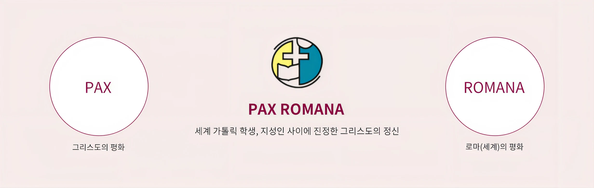
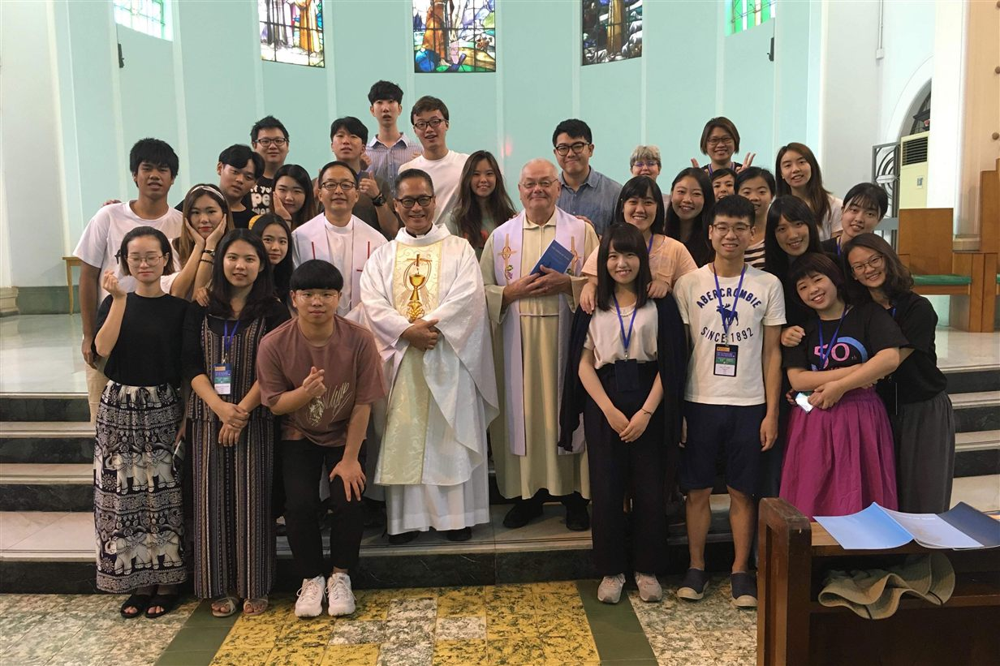
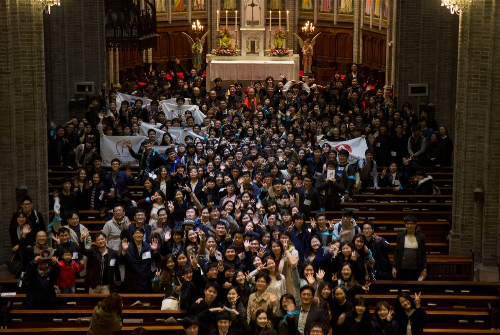
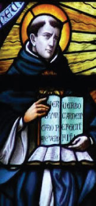

서울대교구 가톨릭 대학생 연합회(Seoul Federation of Catholic Students)
서울 35개 대학 36개 공동체의 동아리 연합체
전국 각 교구에 있는 대학생 연합회로 "한국 가톨릭 대학생 연합"(한가대연)에 소속
국제 IMCS(International Movement of Catholic Students)의 아시아 태평양지부 AP(Asia-Pacific)에 소속
대학사회의 특수성에 맞는 방법으로 복음을 실천하고 학교 내 학생들에게 복음을 전함으로써 예수님의 구원사업에 동참하는 것이 가톨릭학생회의 기본적인 역할입니다.

1차 세계대전 당시 교황(비오 11세)께서 세계 평화를 호소하며 "너희들은 오늘날의 Pax Romana이다."라고 학생들에게 말씀하신데서 유래

가톨릭 학생회의 모든 활동은 탄탄한 내적 복음화에서 시작된다. 가톨릭 학생회 회원인 우리는 모든 것을 시작하기에 앞서 기도, 성경 읽기, 교리 공부 등 내적 복음화를 위한 활동에 최선을 다한다. 우리가 궁극적으로 지향하는 바는 청년 사도로서 일상생활 속에 하느님의 말씀이 녹아들어 그리스도의 향기를 풍기는 삶, 일상생활과 신앙이 일치를 이루는 삶을 사는 것이다. 이는 곧 우리에게 주어진 선교 사명을 다하는 일이기도 하다. 우리는 또한 가톨릭 학생회의 주인으로서 이 청년 사도들의 공동체가 서로에게 신앙 생활의 길잡이가 되어 주며 여러 가지 고민과 어려움도 함께 풀어 나가는 버팀돌이 될 수 있도록 노력한다.
우리가 함께하는 공동체는 회원들만의 모임인 ‘동아리’가 아니라 모든 학생에게 열려 있는 ‘학생회’이다. 이는 가톨릭 학생회의 존재 목적이 기존 회원들의 신심 활동지원에만 머물러 있지 않다는 것을 의미한다. 가톨릭 학생회는 또한 전국 각 지역과 여러 나라에서 모인 학생들과 오랫동안 쉬던 교우들이 신앙 생활의 끈을 놓치지 않도록 돕는 공동체이자 사제·수도자와 학생을, 교회와 학교를 이어 주는 연결 고리이기도 하다. 이에 가톨릭 학생회는 신앙을 찾고자 하는 사람이라면 누구든지 찾아와 함께하는 대학 내 신앙 생활의 구심점 역할을 기꺼이 맡으며 그 활동 공간은 모든 이들이 함께 어울려 미사를 봉헌하고 평소에도 기도와 교리 공부, 신앙 나눔 등을 자유롭게 할 수 있는 성전으로 가꾼다.
우리는 이 시대의, 우리 사회의 가톨릭 지성인이자 청년 사도이다. 복음에 바탕을 둔 시각으로 사회를 인지하며 학교와 사회에서 배우고 깨달은 것을 그리스도인다운 행동으로 실천하는 것은 우리가 하느님께 받은 거룩한 소명이다. 이 소명에 응답하기 위하여 우리는 물질 문명의 발달 속에 사라져 가는 인간성을 회복하는 일에 최선을 다하며, 생명과 평화를 지키기 위한 활동에 다양한 방법으로 동참한다. 세상의 지식을 배우고 익히는 가운데 주님의 진리를 발견하고 이를 세상에 전하는 것도 우리의 몫이다.


St. Thomas Aquinas
사랑이신 아버지 하느님, 저희 대학생들이 가톨릭 학생회를 통하여
당신 안에 하나되게 하신 은혜에 감사드립니다.
세상의 빛이신 하느님, 저희가 청년 예수님의 삶을 본받아
세상에 사랑의 빛을 전하는 아름다운 젊은이가 되게 하소서.
낮은 이들의 주님이신 하느님, 저희가 서로 사랑하는 가운데
낮고 가난한 이들과 함께 하며 생명과 평화를 지켜내는
정의로운 젊은이가 되게 하소서.
믿는 이들의 스승이신 하느님, 저희가 세상의 지식을 배우고 익히는 가운데
주님의 진리를 깨닫고 그 안에 머무르는 복된 젊은이가 되게 하소서.
우리 주 그리스도를 통하여 비나이다.
아멘
한국 교회의 수호자이신 성모 마리아와
그 배필이신 성요셉. 저희를 위하여 빌어 주소서.
대학생의 수호성인이신 성 토마스 아퀴나스,
저희를 위하여 빌어 주소서.
한국의 모든 순교 성인들과 복자들이여,
저희를 위하여 빌어 주소서.